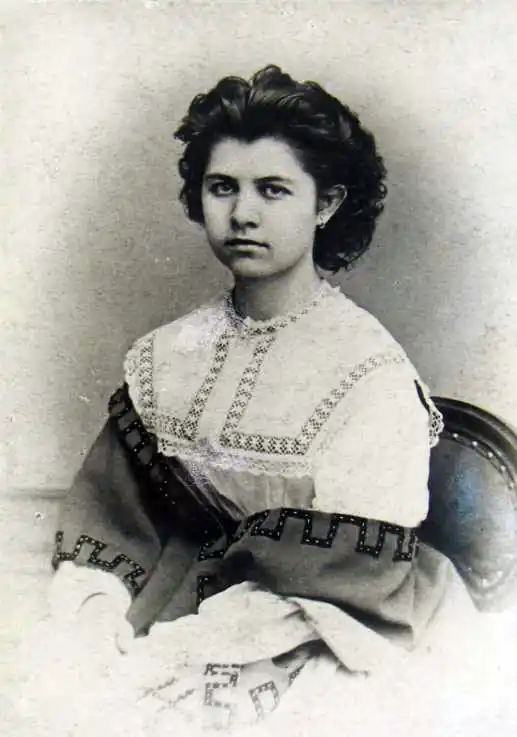
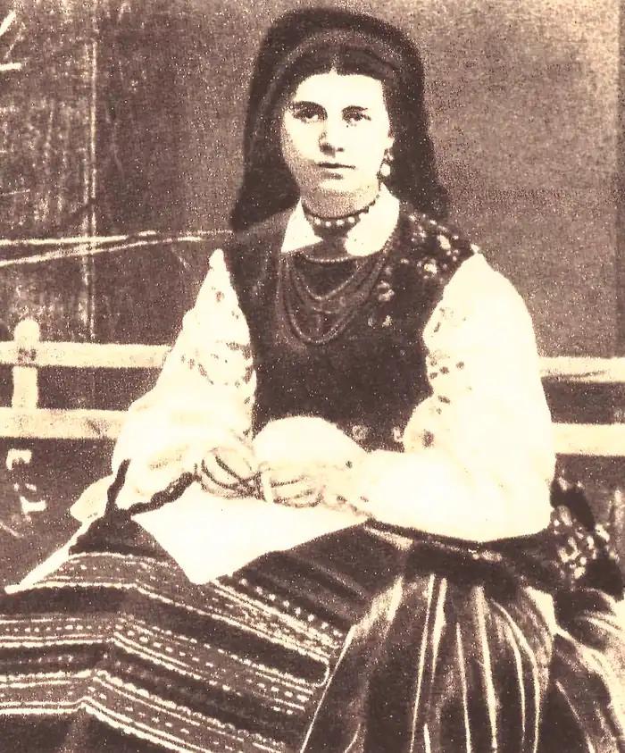
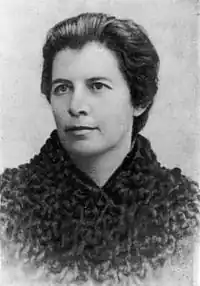

Олена Пчілка (псевдонім Ольги Петрівни Косач; 5 (17) липня 1849, Гадяч — 4 жовтня 1930) — українська письменниця, драматург, публіцистка,громадська і культурна діячка, перекладачка, етнограф, член-кореспондент Всеукраїнської академії наук (1925); мати Лесі Українки, сестра Михайла Драгоманова.
Народилася 5 (17 липня) 1849 року в містечку Гадяч на Полтавщині в родині небагатого поміщика Петра Якимовича Драгоманова. Початкову освіту отримала вдома. Батьки прищепили їй любов до літератури, до української народної пісні, казки, обрядовості. В 1866 році закінчила київський "Зразковий пансіон шляхетних дівиць".
Влітку 1868 року разом з чоловіком виїхали на Волинь до місця служби П. А. Косача у містечко Звягель (ниніНовоград-Волинський), де записувала пісні, обряди, народні звичаї, збирала зразки народних вишивок. 25 лютого1871 року тут народилася дочка Лариса, яка ввійшла в світову літературу як Леся Українка. Два сини й чотири дочки виростила сім’я Косачів. Свій творчий шлях розпочала з перекладів поетичних творів Пушкіна і Лермонтова. 1876 року вийшла друком у Києві її книжка "Український народний орнамент", яка принесла Олені Пчілці славу першого в Україні знавця цього виду народного мистецтва, в 1881 році вийшла збірка перекладів з Миколи Гоголя і з Олександра Пушкіна й Михайла Лєрмонтова "Українським дітям", видала своїм коштом "Співомовки" С. Руданського (1880). З 1883 року почала друкувати вірші та оповідання у львівському журналі "Зоря", перша збірка поезій "Думки-мережанки" (1886). Одночасно брала діяльну участь у жіночому русі, в 1887 році разом з Наталією Кобринською видала у Львовіальманах "Перший Вінок". Навесні 1879 року О. П. Косач з дітьми приїхала в Луцьк до свого чоловіка, якого було переведено на посаду голови Луцько-Дубенського з’їзду мирових посередників. У Луцьку вона вступила в драматичне товариство, а гроші, зібрані від спектаклів, запропонувала використати для придбання українських книг для клубної бібліотеки. У 1890-х роках жила в Києві, у 1906—1914 роках була видавцем журналу "Рідний Край" з додатком "Молода Україна" (1908—1914). Національні і соціальні мотиви становили основний зміст творів Олени Пчілки, в яких вона виступала проти денаціоналізації, русифікації, проти національного і політичного гніту, проти чужої школи з її бездушністю та формалізмам, показувала, як національно свідома українська молодь в добу глухої реакції шукала шляхів до визволення свого народу. У 1920 році за антибільшовицькі виступи була заарештована в Гадячі. Після звільнення з арешту виїхала в Могилів-Подільський, де перебувала до 1924 року, а відтоді до смерті жила в Києві, працюючи в комісіях УАН, членом-кореспондентом якої була з 1925 року. Померла 4 жовтня 1930 року. Похована в Києві на Байковому кладовищі поруч з чоловіком і донькою. До кращих творів Олени Пчілки належать: Олені Пчілці належить поважне місце в українській дитячій літературі. Крім численних поезій, казок, оповідань, вона написала для дітей багато п’єс: Пчілці належить чимало перекладів і переспівів світової класики: Овідія, А. Міцкевича, О. Пушкіна, Й. В. Ґете, Г. К. Андерсена, В. Гюґо. Крім того, вона написала низку публіцистичних, літературно-критичних статей і спогадів: "М. П. Старицький" (1904), "Марко Кропивницький яко артист і автор" (1910), "Євген Гребінка і його час" (1912), "Микола Лисенко" (1913), "Спогади про Михайла Драгоманова" (1926), "Автобіографія" (1930). Великі заслуги П. в ділянці дослідження українського фольклору та етнографії. Наукове значення мають такі праці: "Українські узори" (1912 і 1927), "Про легенди й пісні", "Українське селянське малювання на стінах" та інше. Збірка творів: "Оповідання", І-III (1907, 1909, 1911) та "Оповідання" (з автобіографією, 1930). Нині Волинська обласна наукова бібліотека у місті Луцьку носить ім’я цієї видатної письменниці.